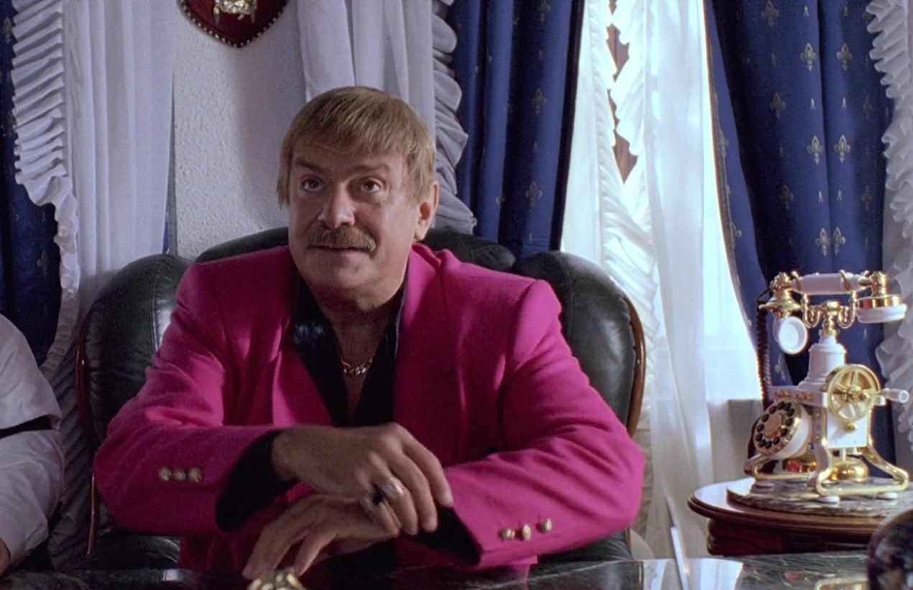

Режиссёр. Лауреат «Оскара». Голос имперского реванша.

Никита Михалков — один из самых известных российских кинорежиссёров. Его фильм «Утомлённые солнцем» получил «Оскар» в 1995 году. Он мог бы остаться в истории как великий художник. Вместо этого он стал главным культурным пропагандистом Кремля.
Родился в семье Сергея Михалкова — автора текста советского гимна. Брат — режиссёр Андрей Кончаловский. С детства погружён в культурную элиту СССР. Аристократическое происхождение в советском смысле — привилегированный доступ к власти через искусство.
Дебютный полнометражный фильм «Свой среди чужих, чужой среди своих» становится культовым. За ним следуют «Раба любви», «Неоконченная пьеса для механического пианино», «Несколько дней из жизни Обломова» — работы мирового уровня, признанные международными критиками.
«Утомлённые солнцем» получают «Оскар» за лучший иностранный фильм. Михалков на пике международного признания. Именно в это время начинается его постепенный дрейф в сторону государственного национализма. Успех становится не трамплином для художника, а основанием для политика.
Михалков возглавляет Союз кинематографистов России, устанавливает контроль над крупнейшей профессиональной организацией. Начинает открыто выступать на стороне Путина. Кино отходит на второй план — на первый выходит политика. Снимает провальный сиквел «Утомлённых солнцем» за государственные деньги.
Программа «Бесогон TV» на «России-1» и «России-24» становится главной площадкой Михалкова. Здесь он продвигает теории заговора о Билле Гейтсе и микрочипах в вакцинах, атакует Сорос-фонды, называет западных лидеров агентами «мировой закулисы». Один из выпусков снимает с эфира сам Кремль — за излишне резкую критику правительства в разгар пандемии.
Михалков поддерживает вторжение в Украину и называет его «исторической необходимостью». ЕС и Великобритания вводят персональные санкции. Факт В эфире «Бесогон TV» называет украинцев «заблудшими братьями», которых нужно «вернуть». Продолжает получать государственное финансирование на кинопроекты.
Михалков активно продвигает концепцию «культурного суверенитета» — полного отказа России от западного культурного влияния. В «Бесогон TV» атакует российских деятелей культуры, покинувших страну после начала войны, называя их «предателями» и «агентами влияния». Требует конфисковать их имущество. Его программа остаётся одной из немногих на государственном ТВ, где ведущий позволяет себе критиковать отдельных чиновников — в рамках, которые Кремль терпит.
Михалков — единственный действующий лауреат «Оскара», открыто поддерживающий войну в Украине. Это делает его особенно ценным для кремлёвской пропаганды: международное признание как легитимизирующий фактор. Интерпр. Киноакадемия США не лишила его премии — регламент не предусматривает такого механизма. В 80 лет он остаётся символом того, как большой художник может стать инструментом государственного насилия.
«Билл Гейтс хочет вколоть всем чип, чтобы контролировать человечество. Это не конспирология — это факты.»
«Украина — это не другое государство. Это заблудшие братья, которых нужно вернуть домой. Силой, если нужно.»
«Те, кто уехал и льёт грязь на Россию — предатели. Их имущество должно быть конфисковано в пользу государства.»
«России не нужен Голливуд. России не нужен Сорос. России нужна Россия.»
«Оскар» 1995 года — главный капитал Михалкова. Он использует международное признание как доказательство того, что его взгляды заслуживают уважения. Художественный авторитет конвертируется в политическое доверие.
«Бесогон TV» построен на теориях заговора — мировая закулиса, чипирование через вакцины, Сорос как архитектор разрушения России. Конспирологический фрейм снимает необходимость доказывать: достаточно намекнуть.
Михалков продаёт образ великой России, которую нужно восстановить. Его кино — «Сибирский цирюльник», «Утомлённые солнцем» — эстетизирует имперское прошлое. «Бесогон» делает то же самое, но напрямую.
Михалков иногда критикует отдельных чиновников и политиков — это создаёт иллюзию независимости. На самом деле его критика всегда системна: он атакует «слабых» внутри системы, никогда не ставя под сомнение саму систему.
Все утверждения в данном досье основаны на открытых публичных источниках. Факты, отмеченные Факт, имеют прямые первичные источники. Отмеченные Интерпр. — авторская интерпретация задокументированных событий.